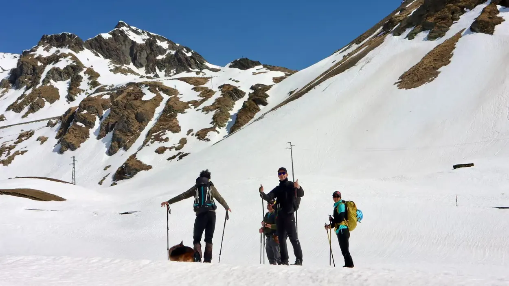
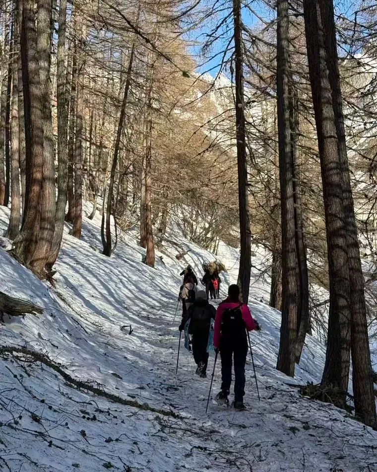
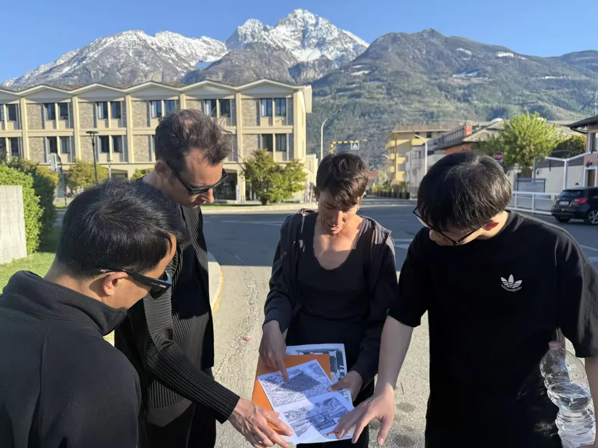
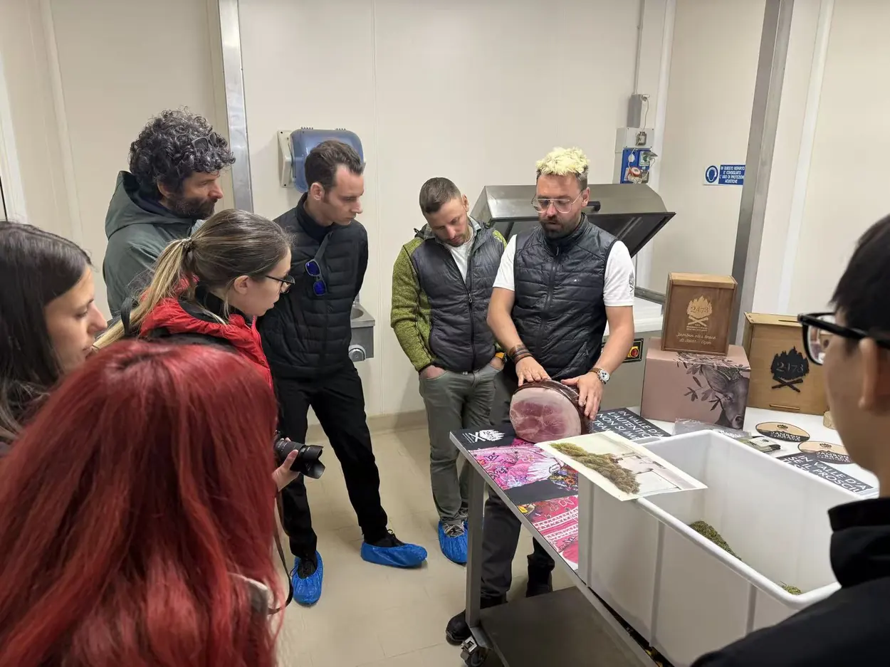
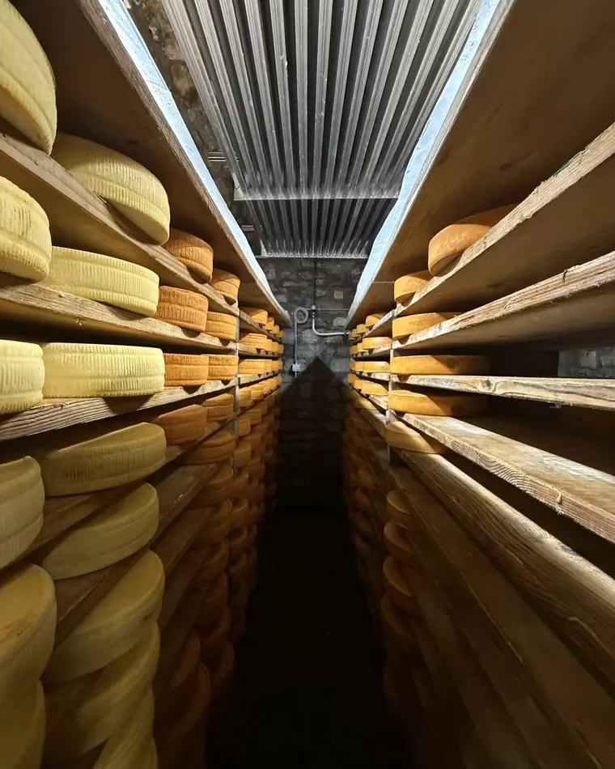
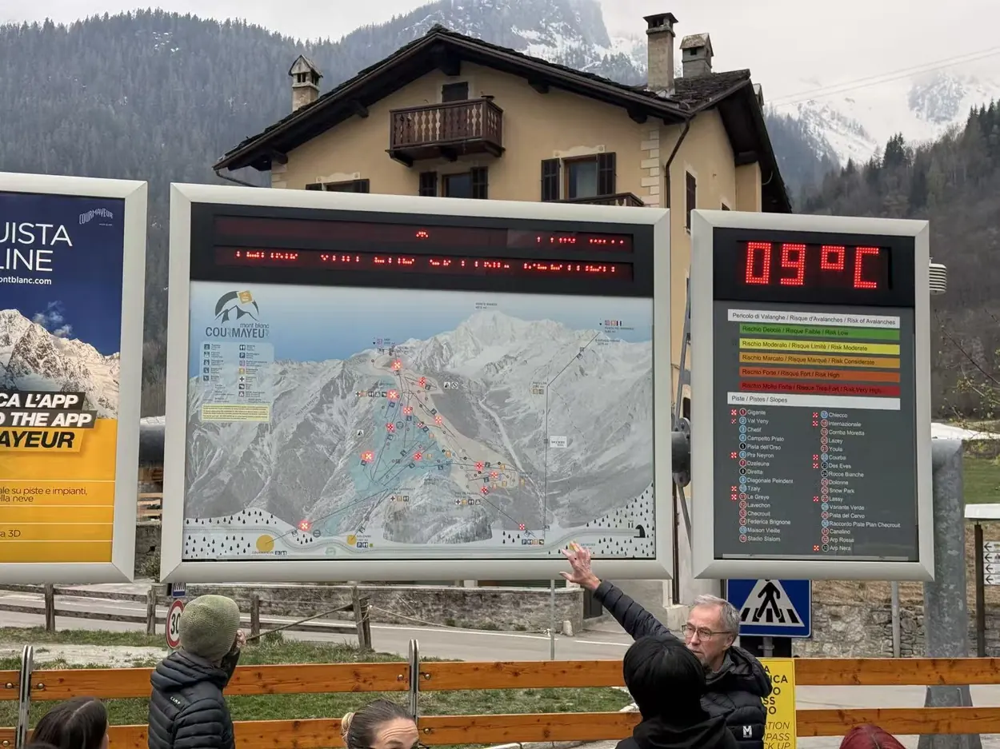
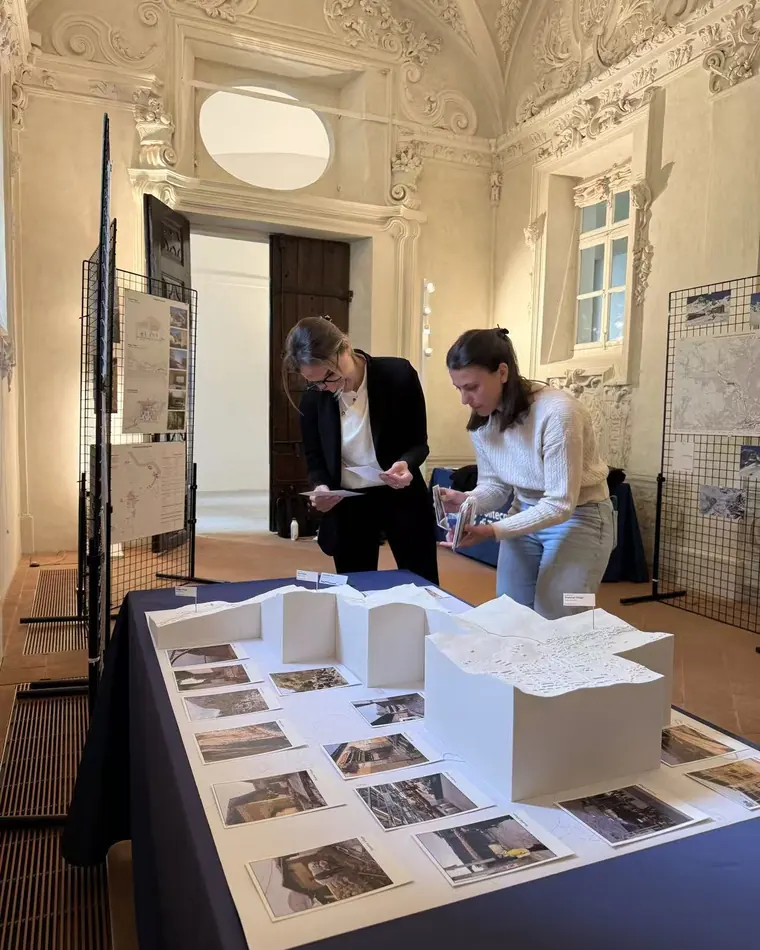
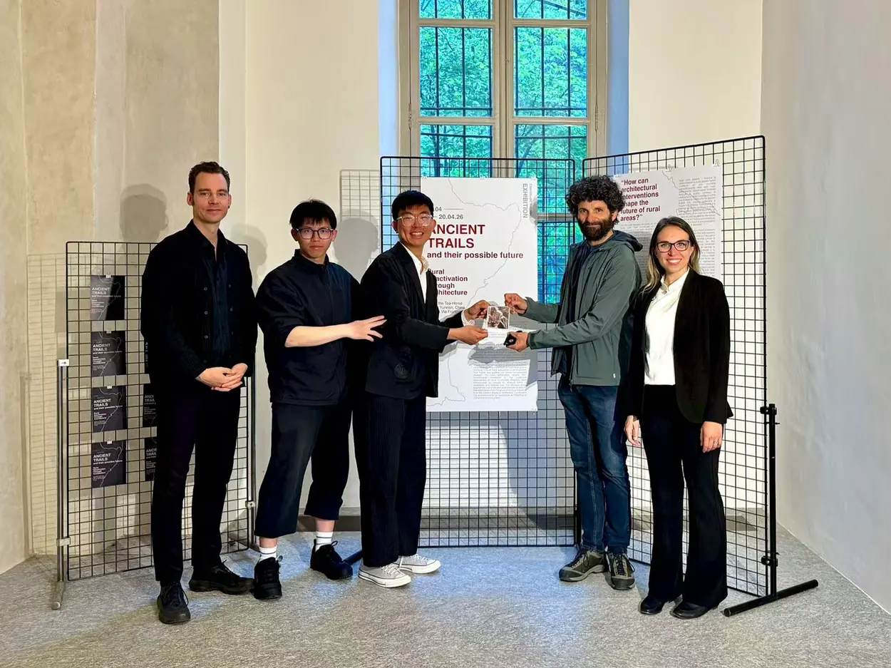

The Trail Has to Earn Its Keep
Walking, production and the everyday economy of the Via Francigena
A restored path can remain economically peripheral. The research question is what gives residents recurring reasons to use and maintain the territory around it.
In April 2026, I joined the Tsinghua University–Politecnico di Torino field investigation in Valle d’Aosta. The Italian work formed a counterpart to research along the Tea Horse Trail in Yunnan. It reframed the route as a way to read connections among settlements, production, landscape and services, with architecture operating between those scales.
Research question
How do historic routes, local production and everyday services interact in sustaining contemporary rural settlements?
A heritage route is also a service network
The field walks recorded how gradients, settlements, production spaces and everyday access complicate the idea of a route as a continuous visitor itinerary.
Evidence: Alpine field observations; programme record [I1]
Production and visitation follow different rhythms
Workshops and food-storage spaces make productive duration visible, but a short visit cannot establish annual operating cycles or household dependence on tourism.
Evidence: Field visits and documented programme [I1]
Visibility is not proof of a sustained livelihood
Tourism can draw attention to rural production; whether this supports year-round local life remains an open empirical question requiring operator and seasonal-use records.
Evidence: Interpretation of field observations; further evidence required
Separate walking, records and inference
Field observation / spatial record ↗
Walking observations trace settlement routes, production sites and the practical conditions of reaching them.
Documentary / archival evidence ↗
Programme documents, route history and published heritage guidance give institutional and historical context distinct from the site photographs.
Interpretation / limits ↗
The relationship between tourism, agricultural production and sustained livelihoods is a research question. Visible workshops or visitor traffic do not establish economic dependence.
Ancient trails as contemporary territory.
The joint programme connected the Tea Horse Trail and Via Francigena through the question of rural reactivation. The Alpine investigation included Aosta, Courmayeur, Saint-Rhémy-en-Bosses, Étroubles, Saint-Oyen and the Great St Bernard Pass. Encounters with local administrations, stakeholders and craftspeople placed everyday inhabitation within the research frame. [I1]
Conserving the physical route and sustaining its surrounding territory are related but different tasks. A path may remain visible even as the services, livelihoods and social relationships that once supported it change. The investigation therefore asks what makes passage useful to the places through which it passes.

Walking as a method of reading relationships.
Slow movement makes distance, slope and thresholds part of architectural observation. A settlement is encountered through its approaches, service spaces, productive edges and places to stop. The method is to relate these local conditions to the wider network: a building’s capacity for reuse depends partly on what can reach it, who needs it and which activities can persist around it.
This reading does not treat a scenic view as evidence of a functioning rural economy. Photographs and route maps show spatial relations; questions about ownership, seasonal occupation or economic viability require other forms of enquiry. Keeping those forms of evidence distinct prevents a field essay from turning an attractive landscape into an uncomplicated model.

Walk the service route as well as the visitor route
The field programme connected researchers from Politecnico di Torino and Tsinghua University with local actors along the Alpine route. Field walks documented access, supply, making, storage, exchange and departure—not only its scenic destinations. [I1]
Walking reveals the effort between destinations. A map can place two buildings close together while a steep approach, a closed gate or a loading requirement makes their practical relation difficult. The relevant section therefore includes the service edge and the stopping place, not only the panorama. The same journey should be read from the position of someone carrying supplies and someone visiting without a burden.
That distinction is especially useful when examining reuse. An empty room is not automatically available capacity: it may be poorly connected to the activity expected to support it. The field observations establish physical questions. Interviews with operators and recurring seasonal records would be needed to establish whether the proposed connection is viable.

Production gives the route another reason to be used.
The research presentation places the Via Francigena beside food-producing workshops and spaces of storage. These encounters matter because production is both a livelihood and a way for visitors to understand a territory. The stopping place becomes an interface between movement and work rather than merely an amenity added to a tourist itinerary.
The field notes record where paths meet workshops, shared rooms and rest facilities. Together, these spaces reveal how production, delivery and visitor access intersect in the Alpine settlements.

The missing drawing is a working calendar
Status of this finding. The difference between production time and visitor time is a reading of observed activities, not a measured annual calendar. Operator interviews, opening-hour records and seasonal data would be needed to test the relationship.
Food production brings different durations into the trail. Making, maturing, storing, selling and visiting do not occupy the same hours or seasons. A room serving more than one of these activities needs a negotiated timetable as much as a flexible plan. Public access may be appropriate at the edge of production while remaining incompatible with a clean work zone or a delivery period.
A further investigation could compare three calendars: the resident’s ordinary week, the production cycle and the visitor season. Where all three coincide, existing shared facilities may serve recurring needs. Where only the visitor season activates a building, maintenance and operating conditions require further verification. The observations do not yet establish an operating balance; the calendar is the next evidence needed to test it.
This distinction directs attention to existing facilities: waiting places, storage, washing areas and workrooms. Whether these support livelihoods across the year would require recurring observations, operator interviews and records of seasonal use.

Tourism is one condition of inhabitation.
Courmayeur complicates a simple narrative of rural decline. A territory can attract substantial visitor activity while still raising questions about housing, services and the continuity of permanent community life. Here these are research questions, not a claim that the field visit established household displacement or measured seasonal vacancy.
The useful distinction is between attracting visitors and sustaining everyday occupation. The field visit identifies services, productive rooms and visitor accommodation as related but different functions; it does not establish their relative economic importance or long-term occupancy.

Attention is not the same as livelihood
Tourism can give a workshop an audience while changing what it makes, when it opens and whose needs organise the space. The productive encounter can become a staged demonstration. This is a tension to examine, not an accusation about the visited businesses. The outstanding research question is whether visitors supplement an existing economy or gradually become its condition of survival.
A counterfactual makes the distinction concrete: if visitor numbers fell for a season, which existing facilities and practices would remain useful to residents? Answering this requires evidence from operators and households rather than a design brief. It also challenges the assumption that a stronger visual identity is sufficient to reactivate a rural place. A recognisable destination and an inhabitable territory are different achievements.
Research exchange and exhibition
The programme moved from investigation to discussion and exhibition at Castello del Valentino, Turin, on 14 April 2026. The exhibition brought together field observations and student work from the participating institutions. [I2]
The exhibition showed how documentation of production, access, care and recurring use could be presented together. The field enquiry remains distinct from design proposals developed in other contexts.
A trail becomes a living system when movement sustains the places it connects.


What the route reveals, and what remains to be tested
The Alpine walk reveals relationships between movement, production and inhabitation: slopes and service routes condition access, food-making operates over durations unlike those of a visitor itinerary, and stopping places can be part of productive and domestic routines. These are spatial observations, not evidence that visitor numbers maintain particular households or that tourism has displaced permanent residents.
The central unanswered question is how resident routines, seasonal production and visitor activity coexist across a full year. Establishing that relationship would require public demographic and tourism data, maintenance responsibilities, repeat visits and interviews with producers and residents. The exhibition documented the research exchange; it is not itself evidence of economic or social outcomes.
04 / Research record & credits
Sources & references
- I1 / Reference
Fondazione Courmayeur Mont Blanc (2026). Ancient Trails and Their Possible Futures.
Joint field programme and Alpine locations, 12–13 April 2026.
Read reference ↗ - I2 / Reference
Politecnico di Torino, DAD (2026). Rural Reactivation Through Architecture seminar & Ancient Trails and Their Possible Futures exhibition.
Castello del Valentino, 14 April 2026.
Read reference ↗ - I3 / Reference
ICOMOS (2008). The ICOMOS Charter on Cultural Routes.
Research, significance and conservation of cultural routes.
Read reference ↗